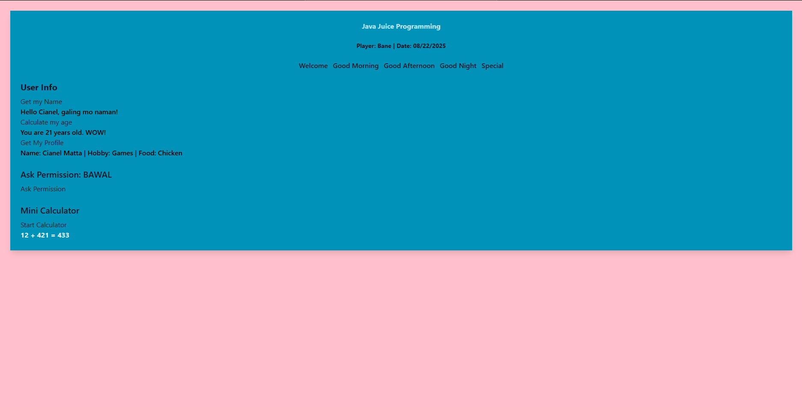
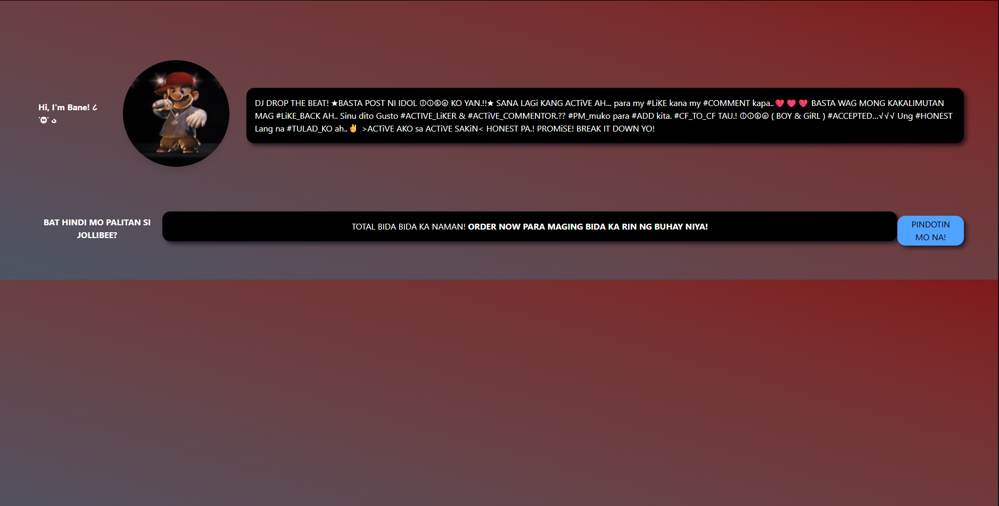

I am a 3rd-year IT student focused on developing secure and efficient technical systems. Passionate about turning concepts into functional, high-performing applications.

HTML5 • Tailwind CSS • JavaScript

HTML5 • Tailwind CSS